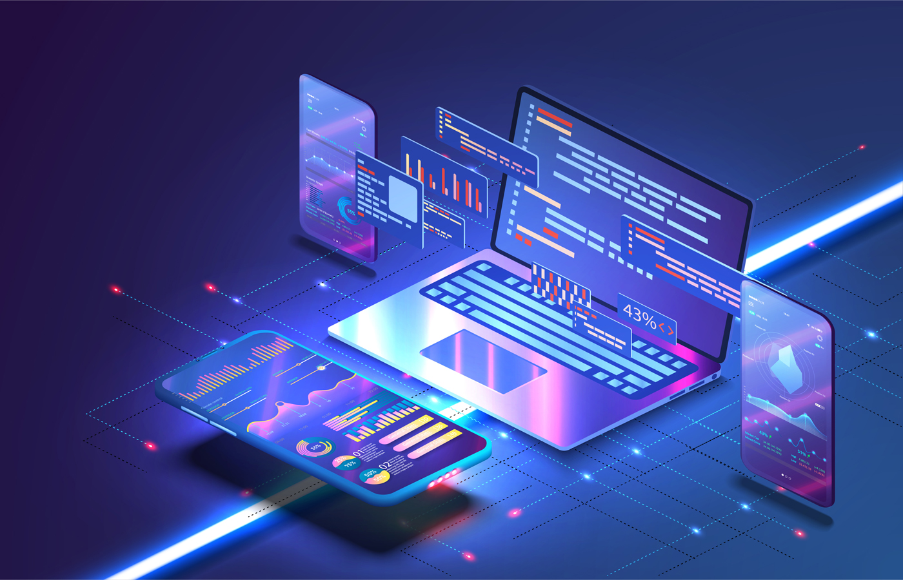
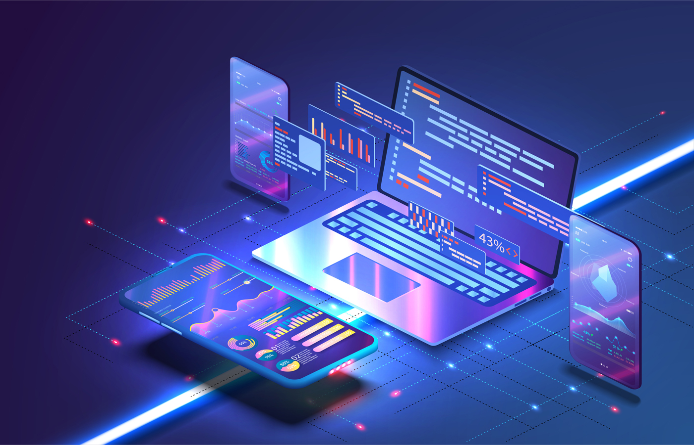
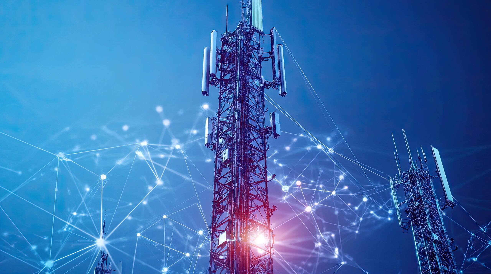
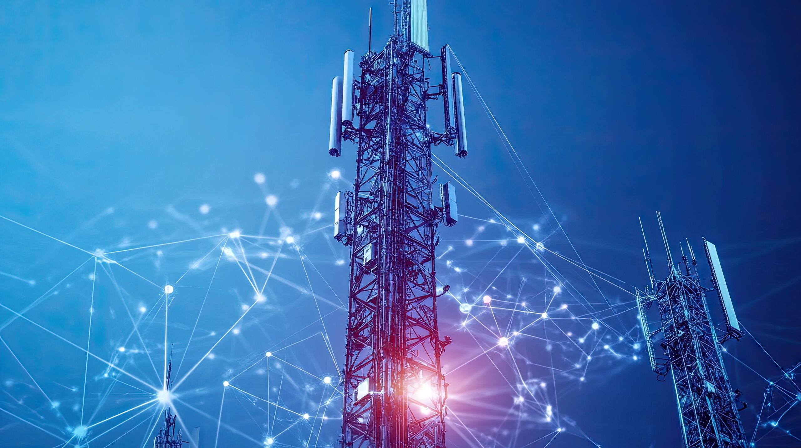
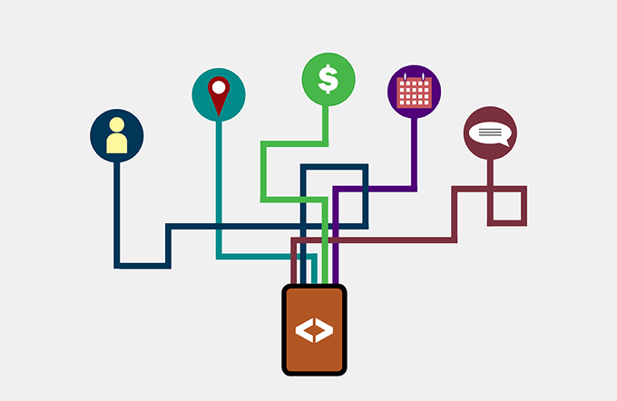
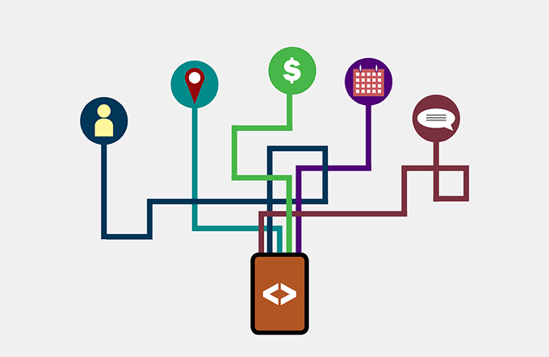

Нашите услуги
Развитие на софтуери

 

Нашата услуга за разработка на софтуер е предназначена да трансформира вашата визия в надеждни, високопроизводителни дигитални решения. Ние не просто пишем код – ние изграждаме интелигентни, мащабируеми и сигурни приложения, които са в съответствие с вашите бизнес цели. От персонализирани уеб платформи и мобилни приложения до системи на корпоративно ниво, нашият екип за разработка предоставя решения, които повишават ефективността, производителността и ангажираността на клиентите в различни индустрии.
Използвайки agile методология, ние гарантираме гъвкавост, сътрудничество и прозрачност през целия процес, като ви държим активно ангажирани от първоначалната концепция до крайното внедряване, за да гарантираме, че крайният продукт отговаря на вашите точни нужди. Като се фокусираме върху производителността, използваемостта, сигурността и дългосрочната устойчивост, ние създаваме софтуер, който не само функционира безпроблемно, но и дава измерими, трайни резултати.
Освен разработката, нашата услуга включва непрекъсната поддръжка, актуализации, мониторинг и оптимизация, за да поддържа вашата технология с една крачка напред. Независимо дали стартирате нова идея, модернизирате съществуващи системи или мащабирате за бърз растеж, ние предоставяме експертизата, за да го осъществим. С нашата услуга за разработка на софтуер вашият бизнес получава мощен, готов за бъдещето инструмент за растеж, адаптация, иновации и успех в постоянно променящия се дигитален пейзаж.
Медицински устройства


Нашата услуга за медицинско оборудване е посветена на предоставянето на здравните заведения на надеждни, модерни и ориентирани към пациента технологии, които подобряват грижите и оперативната ефективност. Ние не просто доставяме устройства – ние предлагаме напълно интегрирани решения, които са съобразени с клиничните нужди, стандартите за безопасност и най-новите иновации в здравеопазването.
От диагностични системи за образна диагностика и устройства за наблюдение на пациенти до хирургически инструменти и рехабилитационно оборудване, нашето цялостно предложение гарантира, че медицинските специалисти разполагат с правилните инструменти за предоставяне на точно, навременно и ефективно лечение. Използвайки рационализиран и прозрачен подход, ние управляваме всеки етап – от консултация и избор на оборудване до доставка, монтаж и текуща поддръжка – като гарантираме, че заведенията остават напълно поддържани по всяко време.
Като се фокусираме върху производителността, безопасността, използваемостта и съответствието, ние предоставяме оборудване, което не само отговаря на индустриалните разпоредби, но и дава възможност на здравните екипи да постигнат възможно най-добрите резултати за пациентите. Освен монтажа, нашата услуга включва непрекъсната поддръжка, надстройки, обучение на персонала и превантивна поддръжка, за да се поддържа оборудването с максимална производителност. Независимо дали разширявате практиката си, модернизирате съществуващи системи или оборудвате ново заведение, нашата услуга за медицинско оборудване гарантира, че винаги сте подготвени да успеете в развиващия се здравен пейзаж.
Телекомуникации

 

Нашата телекомуникационна услуга е предназначена да осигури на бизнеса и организациите надеждна, сигурна и високопроизводителна свързаност, която стимулира комуникацията, сътрудничеството и растежа. Ние не просто доставяме мрежи – ние създаваме персонализирани решения, които са съобразени с вашите специфични нужди, осигурявайки безпроблемни гласови, информационни и интернет услуги във всички операции.
От телефонни системи от корпоративен клас и облачни комуникационни платформи до високоскоростен интернет и защитени мрежи за данни, нашата цялостна услуга дава възможност на екипите да останат свързани по всяко време и навсякъде. Използвайки рационализиран и прозрачен подход, ние управляваме всеки етап – от консултации и проектиране на решения до инсталиране, интеграция и текущо наблюдение – като гарантираме, че вашите системи остават ефективни и без прекъсвания. Като се фокусираме върху надеждността, мащабируемостта, сигурността и потребителското изживяване, ние доставяме телекомуникационна инфраструктура, която не само отговаря на днешните изисквания, но и ви подготвя за утрешните предизвикателства.
Освен настройката, нашата услуга включва непрекъсната поддръжка, надстройки, оптимизация и проактивна поддръжка, за да поддържа вашите комуникационни канали работещи с максимална производителност. Независимо дали разширявате бизнеса си, надграждате съществуващи системи или изграждате напълно свързано дигитално работно място, нашата телекомуникационна услуга гарантира, че винаги сте подготвени да процъфтявате в един бързо развиващ се, свързан свят.
Роботизация


Нашата услуга за роботизация е създадена, за да трансформира бизнеса чрез внедряване на интелигентна автоматизация във всекидневните процеси. Чрез използване на съвременни роботизирани решения, ние помагаме на организациите да намалят повтарящата се ръчна работа, да ограничат човешките грешки и да постигнат по-висока продуктивност във всички дейности.
От индустриални роботи, които оптимизират производството и логистиката, до роботизирана автоматизация на процеси (RPA), която улеснява офисните операции – ние предлагаме решения, съобразени с конкретните нужди на вашия сектор. Ценността на роботизацията не е само в повишаването на ефективността, но и в освобождаването на служителите за стратегически и креативни задачи, които водят до иновации. Нашият подход обхваща целия жизнен цикъл – от анализ и консултация, през индивидуален дизайн и интеграция, до поддръжка и развитие.
Всяко решение е мащабируемо, сигурно и адаптивно към бъдещи технологични промени. Независимо дали целта ви е да подобрите производствените линии, да ускорите обслужването на клиенти или да увеличите цялостната ефективност, ние доставяме реални резултати. Съчетавайки модерна роботика с интелигентна автоматизация, даваме на бизнеса предимство в бързо променящия се дигитален свят.
Сигурност


Нашата услуга за сигурност предлага цялостна защита срещу нарастващите рискове от кибератаки, изтичане на данни и други дигитални заплахи. В епоха, в която организациите разчитат на взаимосвързани системи, защитата на чувствителната информация и непрекъснатостта на операциите са от ключово значение. Ние прилагаме многостепенен подход към киберсигурността, който съчетава надеждни защити като защитни стени, криптиране, управление на идентичности и системи за откриване на прониквания, заедно с проактивни анализи на риска и стратегии за съответствие. Всяко решение е персонализирано според нуждите на клиента, за да защитава мрежи, приложения и данни на всички нива.
Нашият процес започва с пълен одит и оценка на уязвимостите, след което преминаваме към изграждане и внедряване на конкретни мерки за сигурност. Но защитата не приключва дотук – ние осигуряваме постоянно наблюдение, бърза реакция при инциденти и редовни актуализации за нови заплахи. Този проактивен подход минимизира рисковете и повишава устойчивостта на организацията. С нашите решения компаниите могат да се развиват спокойно, знаейки че тяхната цифрова инфраструктура, служители и клиенти са защитени днес и в бъдеще.
Интеграция
 

Нашата услуга за интеграция е насочена към изграждане на безпроблемни връзки между различните системи, приложения и технологии, от които зависят съвременните организации. Днес бизнесът често разчита на множество платформи – ERP и CRM системи, облачни услуги и дори стари софтуери. Без правилна интеграция те могат да доведат до изолирани данни, ниска ефективност и излишна сложност. Ние се специализираме в обединяването на тези технологии в една унифицирана екосистема, която подобрява сътрудничеството, вземането на решения и общата производителност.
Чрез персонализирани стратегии за интеграция осигуряваме ефективна комуникация между системите, споделяне на данни в реално време и подкрепа за мащабируем растеж. Независимо дали става дума за свързване на локални приложения с облачни услуги, модернизация на инфраструктура или обмен на информация между отдели, нашите решения минимизират прекъсванията и добавят стойност. Нашият процес включва консултация, проектиране, внедряване и непрекъснат мониторинг за дългосрочна надеждност. С редовни актуализации и оптимизация гарантираме, че вашата интегрирана среда отговаря на динамичните бизнес нужди. Така бизнесът постига повече гъвкавост, прозрачност и ефективност, превръщайки разпокъсаните технологии в цялостна основа за успех.